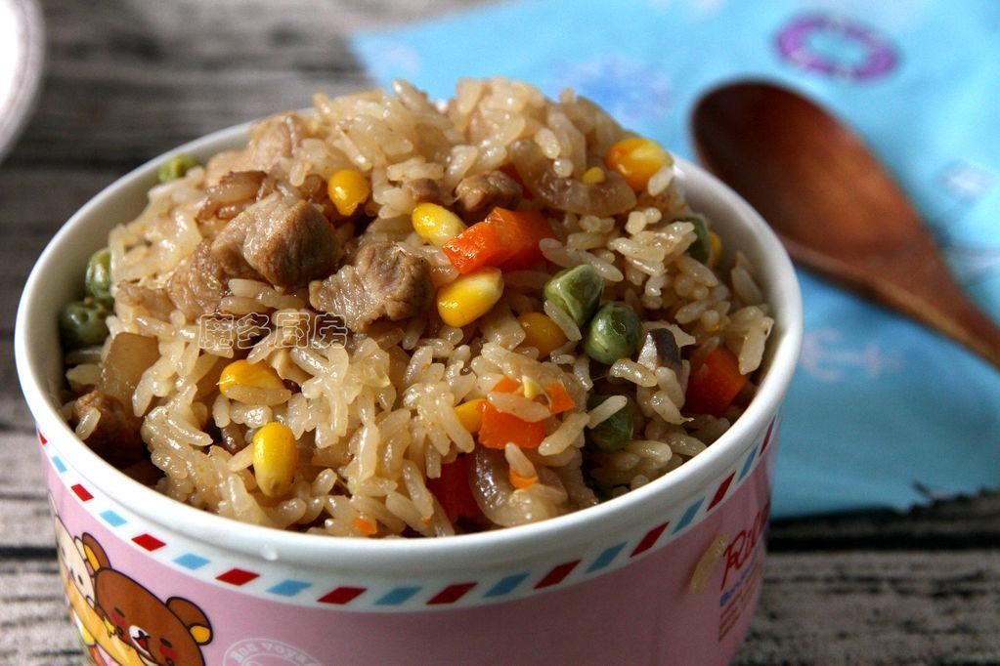

Tiếng kêu gào thảm thiết của cô gái xé toạc toàn bộ không gian nhà thờ.
Lỗ tai Mạnh Kiều như sắp nổ tung!
Gần như là cùng lúc, tứ chi của cô cũng bị co rút đau đớn dữ dội, như thể các cơ và dây thần kinh của cô đang từng chút một bị cắt rời ra, chỉ còn lớp da nối lại.
Cổ họng Mạnh Kiều phát ra tiếng thét chói tai dữ dội.
Trăm mối cảm xúc của thiếu nữ như được lụt hồng thủy gột sạch, bi thương, đau khổ, tuyệt vọng, căm hận, chúng ào ào tràn vào tay chân xương cốt của Mạnh Kiều, hành hạ cô đến thương tích đầy mình.
"A a a ——!"
Mạnh Kiều hét lên một tiếng, toàn thân vì đau đớn mà không ngừng run rẩy, nước mắt điên cuồng trào ra từ hốc mắt, ngay lập tức trước mắt cô trở nên mờ mịt không thấy rõ gì nữa.
Cô cảm nhận được một loại đau khổ bất lực, chính là loại không thể cưỡng lại số phận làm cô phải chìm đắm trong vô vàn tuyệt vọng và đau khổ.
Cảm xúc của thiếu nữ ấy lan sang cô.
Cô đơn và lạnh lẽo vô tận.
Sau đó im bặt trong bóng tối.
“Mạnh Kiều, Kiều Kiều?” Nghiêm Mục vẫn ôm cô.
Khoảnh khắc Mạnh Kiều vừa tiếp xúc với cô gái mặt nạ, toàn thân lập tức cứng đờ, cô gái mặt nạ không hề nán lại quá lâu, thẳng thắn xoay người rời đi. Đây là lần đầu tiên Nghiêm Mục nhìn thấy được vẻ hốt hoảng lúng túng trong bóng lưng của cô ấy.
Mà Mạnh Kiều vẫn đứng nguyên tại chỗ, hai ba phút sau, cổ họng cô phát ra một tiếng kêu thảm thiết, như đang bị tra tấn cực hình vậy.
Kèm theo tiếng thét chói tai, cơ thể Mạnh Kiều mềm nhũn trong nháy mắt, Nghiêm Mục ôm lấy cô, ôm chặt lấy thân thể đang rét run của cô. Trước đây Mạnh Kiều chưa từng xảy ra tình trạng như thế này, mặc dù bây giờ ngũ quan cô không chảy máu, nhưng từ đầu đến chân đều đang run cầm cập.
Cô trải qua nỗi đau khổ tột cùng, tra tấn tàn khốc trong ý thức ảnh hưởng đến cơ thể của cô.
“Tỉnh lại đi em.” Nghiêm Mục vuốt ve cái trán đầy mồ hôi của cô: “Mạnh Kiều, tỉnh lại đi, em chỉ đang trong ảo cảnh thôi.”
Anh lắc lắc hồi lâu, cuối cùng Mạnh Kiều cũng ngừng kêu gào, cố gắng mở mắt ra.
Nước mắt thấm ướt hàng mi dài của cô, nước mắt lưng tròng, cô bỗng xoay người chui vào trong lòng Nghiêm Mục, như thú con bị thương. Trong lòng không hiểu sao lại dâng lên nỗi chua xót khổ sở, nước mắt ngày càng tuôn trào, Mạnh Kiều bắt đầu vỡ òa bật khóc thật lớn.
Cô chưa bao giờ có cảm xúc mãnh liệt đến vậy.
Nghiêm Mục không biết cô đã trải qua những gì, chỉ lặng lẽ ôm cô.
Vừa rồi hai người ngồi trong cửa hàng, Mạnh Kiều nằm trong lòng Nghiêm Mục, mặt áp vào lồng ngực nóng bỏng của anh. Người cô lạnh toát, dường như máu từ tay chân tản đi hết.
Nghiêm Mục vuốt ve sống lưng cô, an ủi cô gái đáng thương trong lòng.
"Đừng khóc."
Giọng nói trầm thấp mang lại cảm giác thoải mái và bình yên.
Mạnh Kiều nức nở nghẹn ngào: "Khó chịu quá... Cực kỳ khó chịu..." Hai mắt cô đỏ hoe, rời khỏi lồng ngực của Nghiêm Mục, dẩu dẩu cái miệng nhỏ nhắn chịu đựng tất cả tủi thân: "Khó chịu thật đấy, hình như em bị ngũ mã phanh thây, em thấy được cảnh tượng của cô gái mặt nạ, chuyện này quá là kỳ quái."
Giọng cô khàn khàn, Mạnh Kiều không ngừng kể những gì mình nhìn thấy vừa rồi, nhưng cuối cùng cô vẫn không thể hiểu nổi, đành phải đưa đôi mắt đỏ hoe xin người đàn ông giúp đỡ.
Người đàn ông lại ôm chặt lấy cô, hôn lên đôi mắt đẫm lệ của cô, nụ hôn nhẹ nhàng kéo dài từ khóe mắt lên trán.
Trên mặt Mạnh Kiều ửng đỏ, lộ ra vẻ ngượng ngùng không tự nhiên, nhưng cô lại cảm thấy mình yên tâm hơn rất nhiều. Cô dựa vào người đàn ông, hít hà mùi thuốc lá đặc trưng trên người Nghiêm Mục, rồi oán trách.
“Đây là lần đầu tiên em nhõng nhẽo với anh đấy.” Nghiêm Mục cười cười: “Làm một cô bạn gái nhỏ bám người là một chuyện rất dễ dàng đúng không?”
Trước nay đề tài nói chuyện của anh và Mạnh Kiều đều là nhiệm vụ hoặc manh mối phó bản, hoặc là điểm. Cô chưa bao giờ thể hiện vẻ yếu đuối của mình trước mặt người khác như thế này.
Sau gáy Mạnh Kiều nóng bừng vì câu bạn gái của anh, cô có cảm giác mình tự định chung thân với người ta. Tất cả dường như trở thành ván đã đóng thuyền sau từ "cô bạn gái nhỏ" này.
Cô đỏ mặt ngẩng đầu nhìn anh, muốn nổi giận nhưng lại chẳng có lý do: "Sao nào, anh không thích em nhõng nhẽo à?"
“Không.” Khóe miệng Nghiêm Mục nhếch lên, ánh mắt dịu dàng như ngân hà rực rỡ, thành kính mà quyến luyến hôn lên mắt cô: “Anh rất thích vẻ ỷ lại vào anh của em.”
Anh xoa xoa mái tóc rối vì dụi dụi trong lòng mình của Mạnh Kiều.
Mạnh Kiều lại vòng tay qua eo Nghiêm Mục, vùi đầu vào ngực anh. Chuyện này có quá nhiều nghi vấn, nhưng bọn họ không muốn bỏ lỡ bầu không khí mập mờ hiện tại.
Nghiêm Mục ôm Mạnh Kiều, dựa vào vách tường lạnh băng.
Từ khi thoát khỏi ảo cảnh, cô vô cùng khát vọng nhiệt độ cơ thể và mùi hương của người đàn ông này, giống như chiếc hộp Pandora được mở ra, lỗ mũi tràn ngập mùi hương của Nghiêm Mục mà cô đã hít vào.
Trong lòng cô chợt nảy ra một ý nghĩ, vì vậy Mạnh Kiều hôn vội lên sườn cổ Nghiêm Mục.
Đôi môi mềm mại vừa chạm vào lập tức rời đi.
Sau đó lại rúc về vòng tay ấm áp.
Làm thế cô càng thêm an lòng, người đàn ông này như một liều thuốc tốt trong giây phút hiện tại.
Nghiêm Mục cảm giác như bị mèo con liếm láp, cổ ngứa ngáy, cúi đầu nhìn nụ cười quyến rũ của Mạnh Kiều. Mọi thứ vừa mới xảy ra làm tâm trí bình tĩnh đáng tự hào của anh sụp đổ, người đàn ông sửng sốt mấy giây, sau đó bỗng vòng tay qua ôm chặt eo cô, kéo người lên, rồi cúi đầu hung hăng hôn xuống.
Trong lúc làm nhiệm vụ, Nghiêm Mục không dám có suy nghĩ không an phận, lúc nào cũng phải tỉnh táo, để cả hai người có thể sống sót. Cho nên lần thí nghiệm khí độc kia, anh hoàn toàn không xen lẫn bất cứ tình cảm cá nhân nào, mà giống như hô hấp nhân tạo hơn. Thế nhưng áp lực lại mang đến bùng nổ không tài nào kiểm soát được, anh giữ gáy của Mạnh Kiều, vừa hôn vừa gặm lên môi cô.
Hơi thở mềm mại của Mạnh Kiều lan tràn giữa răng môi anh, như một bông hoa tràn đầy sức sống nở rộ trong ngày hè.
Cô hiển nhiên là vừa phản ứng kịp từ trong mưa hôn dữ dội, trợn tròn mắt, hai tay không biết đặt ở đâu, Nghiêm Mục kéo tay cô, đặt lên eo mình, sau đó càng hôn sâu hơn.
Trong cơn dây dưa, cô cảm thấy đại não mình thiếu oxy, cơ thể như nhũn ra.
Cô dùng hết khả năng, vụng về đáp lại anh.
Bàn tay đang ôm eo cô bỗng buông ra, anh nắm chặt cằm cô, hai người nhìn nhau.
Hai mắt Mạnh Kiều ngập nước, mà độ ấm trong hồ nước ấy đủ làm người ta đắm chìm. Cô rúc trong vòng tay người đàn ông, bị hơi thở càn rỡ mà bá đạo xâm chiếm, cảm giác mình đã bị người này truyền thuốc độc, thuốc mê.
Mồ hôi chảy ròng ròng trên trán.
Sự nóng bỏng của Nghiêm Mục đốt bay cơn lạnh lẽo của cô.
Thật lâu sau, hai người mới tách ra.
Mạnh Kiều thở hổn hển, sờ sờ đôi môi bị hôn đến hơi sưng, gió thu ngoài đường vẫn không ngừng thổi, cô lại dựa vào lòng người đàn ông.
“Tim anh đập nhanh thật đấy.” Mạnh Kiều cười cười, cứ như ai nói chuyện trước sẽ là người thắng cuộc.
Nghiêm Mục bật cười, rồi khẽ thở dài: "Thật đáng yêu."
Mạnh Kiều liếc mắt nhìn anh: "Chúng ta cũng không thể ở đây mãi được, eo em tê rần rồi, anh đỡ em dậy đi."
Nghiêm Mục nhướng mày, eo đã tê rần rồi à?
Anh đỡ cô gái dậy: "Eo em tê rồi có cần anh bế đi không?"
Mạnh Kiều ngượng ngùng đẩy anh một cái: "Em cũng chẳng làm gì cả, không cần!"
Nghiêm Mục khẽ cười.
Hai người đi bộ về nhà, lúc đến cửa cầu thang Mạnh Kiều và Nghiêm Mục vô thức dừng chân.
Trong hành lang có tiếng động!
Mạnh Kiều nháy mắt, Nghiêm Mục dứt khoát đá tung cửa ra. Giữa cầu thang là một người dị dạng thối rữa, hai đầu ba tay vặn vẹo vẫy vẫy. Từ khi cô biết những biến dị của chứng bệnh nứt da này đã cảm thấy giết bọn họ là một hành vi lạm sát người vô tội. Nhưng khi người dị dạng này thấy người sống trẻ trung hoạt bát thì bỗng nhào tới hai người!
Nghiêm Mục vung dao một cái, cắt gió xẹt thẳng qua mái tóc rối của Mạnh Kiều. Lưỡi dao trong tay cắm sâu vào ngực người dị dạng, bên trong cơ thể người nọ phát ra một tiếng nổ ùng ục, sau đó bắt đầu tự bốc cháy. Người dị dạng không thể thét lên, cũng hoàn toàn không có bản năng tìm nước dập lửa, cứ để mặc cho lửa thiêu rụi chính mình.
Trở thành đống tro màu đen nhỏ.
Cũng giống như những người đã chết trong nhiệm vụ.
"Cái quái gì vậy? Sao lại tự bốc cháy rồi?" Mạnh Kiều hỏi.
“Sau khi bọn họ bị thương trí mạng sẽ tự thiêu mình thành tro bụi.” Nghiêm Mục đến gần đánh giá đống tro đen.
Mạnh Kiều nhìn thấy trong tro bụi có một tinh thể kỳ lạ, dưới ánh sáng yếu ớt, tinh thể đó chiếu lấp lánh giống như một viên ngọc trong suốt sáng bóng, Nghiêm Mục nhặt lên, quan sát mấy lần rồi đặt vào lòng bàn tay Mạnh Kiều.
Sau khi vào nhà, Mạnh Kiều rửa sạch sẽ tinh thạch kia, cho vào túi ni lông. Cô ghé vào trước bàn quan sát không nhúc nhích: “Anh nói xem, đây có phải là xá lị (*) người dị dạng sau khi bị thiêu cháy để lại không?”
(*) Xá lị: là những hạt nhỏ có dạng viên tròn trông giống ngọc trai hay pha lê hình thành sau khi thi thể được hỏa táng hoặc thân cốt sau khi chết của các vị cao tăng Phật giáo.
“Em đã từng nghe nói ai cũng có thể có xá lị chưa?” Nghiêm Mục hỏi ngược lại, bắt đầu nấu những nguyên liệu tìm được ở siêu thị.
Mạnh Kiều lắc đầu, nhưng trong miệng lại lầm bầm: "Lỡ đâu là một cao tăng đắc đạo thì sao?"
Nghiêm Mục nói: "Đừng nghĩ nữa, đi tắm đi, cả người em đầy mồ hôi rồi kìa."
Mạnh Kiều giật mình: “Sao tự dưng bảo em đi tắm?”
Không nhanh đến mức vậy chứ?
Nghiêm Mục từ trong phòng bếp đi ra, quan sát Mạnh Kiều từ trên xuống dưới một phen: "Em không cảm thấy trên đầu em toàn là bụi đất sao? Em lại đang suy nghĩ lung tung cái gì đấy?"
“Ồ...” Mạnh Kiều gật đầu, như cún con cụp đuôi, xấu hổ đi vào nhà tắm.
Suýt nữa thì...
Cô vừa nghe một câu trước, trái tim như muốn nhảy ra khỏi cổ họng, dọa chết cô rồi, quả nhiên yêu đương ngoài đời và trên mạng quá khác nhau.
Mạnh Kiều đi ra khỏi nhà tắm, trên người tỏa ra mùi đào trắng thơm ngát. Cô đi chân trần bước ra, để lại vệt nước, sau đó ngồi xuống sofa: "Hôm nay ăn gì thế?"
"Cơm độn (*). Anh thấy rau trong tủ lạnh vẫn chưa hư, còn có một ít thịt đóng gói hút chân không, cứ coi như là cơm độn thịt xắt nhỏ đi." Nghiêm Mục bới một chén cho Mạnh Kiều: "Một hồi uống thêm chút vitamin nữa, rau dưa không đủ tươi nên không nhiều vitamin."
(*) Hình minh họa

“Được.” Mạnh Kiều lười biếng khoanh chân, như cô nhóc được cha già cưng chiều.
Hai người ngồi trên sofa, ánh chiều tà nghiêng nghiêng, ấm áp chiếu lên hai người. Cô nghiêng đầu nhìn người đàn ông, lại nhìn cảnh tượng tịch liêu bên ngoài, dùng giọng điệu đã trải qua mưa gió than thở: "Khi nào mới qua đây."
Nghiêm Mục nắm tay cô: "Sẽ tốt hơn thôi."
Giống như bọn họ đã thực sự ở bên nhau vậy.
Có loại cảm giác thực tế này.
Ngoài cửa sổ.
Bảng xếp hạng điểm.
[No 1. Bạch Trình Hi]
[No 2. Nghiêm Mục]
[No 3. Cốc Thu]
"Bảng điểm này dùng để làm gì? Danh sách công bố cuộc chiến sống còn à?" Mạnh Kiều hỏi.
"Xếp hạng đi kèm với loại bỏ, điểm số để tổng kết."